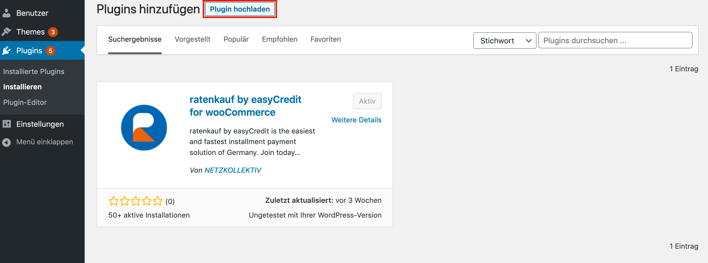

Installation¶
Das Plugin für ratenkauf by easyCredit kann im Bereich der Plugins entweder über den direkten Download aus dem Wordpress Plugin-Verzeichnis oder über den Datei-Upload des bereitgestellten Archives über Plugin Hochladen installiert werden. Alternativ ist auch die Installation über die Kommandozeile z.B. über WP-CLI möglich.
Wordpress Plugin-Verzeichnis¶
Zu Installation melden Sie sich im Admin Panel Ihrer Wordpress Installation an. Sie finden das Admin Panel unter der folgenden URL: http(s)://mein-shop.tld/wp-admin.
Öffnen Sie im Admin Panel nun den Plugin Bereich durch Klick im Menü auf . Klicken Sie neben der Überschrift auf den Button . Sie finden das Plugin, indem Sie in Suche oben rechts easyCredit eingeben:

Installieren Sie das Plugin nun durch Klick auf Jetzt installieren. Fahren Sie anschließend mit der Konfiguration fort.
manueller Datei-Upload¶
Gehen Sie analog zur Installation über das Plugin-Verzeichnis vor. Um das Plugin manuell hochzuladen, klicken Sie auf den Button Plugin hochladen. Wählen Sie den lokalen Pfad aus, unter dem sich das ZIP-Archiv des WooCommerce Plugins befindet und klicken Sie anschließend auf Jetzt installieren. Fahren Sie anschließend mit der Konfiguration fort.
Kommandozeile¶
Um das Plugin über die Kommandozeile zu installieren, führen Sie die folgenden Befehle aus:
$ wp plugin install https://downloads.wordpress.org/plugin/wc-easycredit.1.6.6.zip
$ wp plugin activate wc-easycredit
Fahren Sie anschließend mit der Konfiguration fort.